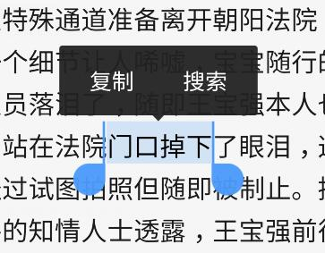

X5内核，解决系统webview兼容性差、加载速度慢、功能缺陷等问题
解决一切令开发者们头疼的问题，让开发者快速而轻松地开启开发之旅
1. TBS(腾讯浏览服务)的优势
1) 速度快：相比系统webview的网页打开速度有30+%的提升；
2) 省流量：使用云端优化技术使流量节省20+%；
3) 更安全：安全问题可以在24小时内修复；
4) 更稳定：经过亿级用户的使用考验，CRASH率低于0.15%；
5) 兼容好：无系统内核的碎片化问题，更少的兼容性问题；
6) 体验优：支持夜间模式、适屏排版、字体设置等浏览增强功能；
7) 功能全：在Html5、ES6上有更完整支持；
8) 更强大：集成强大的视频播放器，支持视频格式远多于系统webview；
9) 视频和文件格式的支持x5内核多于系统内核
10) 防劫持是x5内核的一大亮点
2. 运行环境
1)手机ROM版本高于或等于2.2版本
2)手机RAM大于500M，该RAM值通过手机 /proc/meminfo 文件的MemTotal动态获取
注：如果不满足上述条件，SDK会自动切换到系统WebView，SDK使用者不用关心该切换过程。
3. SDK尺寸指标
1)SDK提供的JAR包约250K
下载 SDK jar 包放到工程的libs目录下，将源码和XML里的系统包和类替换为SDK里的包和类，具体对应如下：
| 系统内核 | SDK内核 |
|---|---|
| android.webkit.ConsoleMessage | com.tencent.smtt.export.external.interfaces.ConsoleMessage |
| android.webkit.CacheManager | com.tencent.smtt.sdk.CacheManager(deprecated) |
| android.webkit.CookieManager | com.tencent.smtt.sdk.CookieManager |
| android.webkit.CookieSyncManager | com.tencent.smtt.sdk.CookieSyncManager |
| android.webkit.CustomViewCallback | com.tencent.smtt.export.external.interfaces.IX5WebChromeClient.CustomViewCallback |
| android.webkit.DownloadListener | com.tencent.smtt.sdk.DownloadListener |
| android.webkit.GeolocationPermissions | com.tencent.smtt.export.external.interfaces.GeolocationPermissionsCallback |
| android.webkit.HttpAuthHandler | com.tencent.smtt.export.external.interfaces.HttpAuthHandler |
| android.webkit.JsPromptResult | com.tencent.smtt.export.external.interfaces.JsPromptResult |
| android.webkit.JsResult | com.tencent.smtt.export.external.interfaces.JsResult |
| android.webkit.SslErrorHandler | com.tencent.smtt.export.external.interfaces.SslErrorHandler |
| android.webkit.ValueCallback | com.tencent.smtt.sdk.ValueCallback |
| android.webkit.WebBackForwardList | com.tencent.smtt.sdk.WebBackForwardList |
| android.webkit.WebChromeClient | com.tencent.smtt.sdk.WebChromeClient |
| android.webkit.WebHistoryItem | com.tencent.smtt.sdk.WebHistoryItem |
| android.webkit.WebIconDatabase | com.tencent.smtt.sdk.WebIconDatabase |
| android.webkit.WebResourceResponse | com.tencent.smtt.export.external.interfaces.WebResourceResponse |
| android.webkit.WebSettings | com.tencent.smtt.sdk.WebSettings |
| android.webkit.WebSettings.LayoutAlgorithm | com.tencent.smtt.sdk.WebSettings.LayoutAlgorithm |
| android.webkit.WebStorage | com.tencent.smtt.sdk.WebStorage |
| android.webkit.WebView | com.tencent.smtt.sdk.WebView |
| android.webkit.WebViewClient | com.tencent.smtt.sdk.WebViewClient |
需要注意的是:
1)请不要在代码里使用下述写法：
import android.*;
import android.webkit.*;
import android.webkit.WebStorage.*;
import android.net.*;
import android.net.http.*;
2)除了源码里需要把相关的包名和类名进行替换，布局xml里的声明也需要替换，例如：
<com.tencent.smtt.sdk.WebView
android:id="@+id/forum_context"
android:layout_width="fill_parent"
android:layout_height="fill_parent"
android:paddingLeft="5dp"
android:paddingRight="5dp" />
为了确保替换的完整，可以使用脚本checkqbsdk.sh 点击下载 进行扫描，windows 上使用TBSSdk接入扫描工具.exe 点击下载 进行扫描。脚本放在所有源码的顶级目录下运行即可。后续的版本发布前尽量都运行一遍扫描，以免上次扫描后新提交的代码有未替换的情况发生。替换不完全时，可能发生的问题是关于cookie的身份错误、类转换时的crash等。cookie问题产生的原理是:一段代码把cookie塞给了系统内核，另外一段代码尝试从x5的内核里读取cookie就失败了。类转换的错误产生的原理是：比如xml里指定的是系统的webview，java的代码里把它当作x5的webview使用。
x5暂时不提供64位so文件，为了保证64位手机能正常加载x5内核，请参照如下链接修改相关配置https://x5.tencent.com/tbs/technical.html#/detail/sdk/1/34cf1488-7dc2-41ca-a77f-0014112bcab7
AndroidManifest.xml里加入权限声明：
<uses-permission android:name="android.permission.WRITE_EXTERNAL_STORAGE" />
<uses-permission android:name="android.permission.ACCESS_NETWORK_STATE" />
<uses-permission android:name="android.permission.ACCESS_WIFI_STATE" />
<uses-permission android:name="android.permission.INTERNET" />
<uses-permission android:name="android.permission.READ_PHONE_STATE" />
优化异常上报：
为了提高合作方的webview场景稳定性，及时发现并解决x5相关问题，当客户端发生crash等异常情况并上报给服务器时请务必带上x5内核相关信息。x5内核异常信息获取接口为：com.tencent.smtt.sdk.WebView.getCrashExtraMessage(context)。以bugly日志上报为例：
UserStrategy strategy = new UserStrategy(appContext);
strategy.setCrashHandleCallback(new CrashReport.CrashHandleCallback() {
public Map
LinkedHashMap
String x5CrashInfo = com.tencent.smtt.sdk.WebView.getCrashExtraMessage(appContext);
map.put("x5crashInfo", x5CrashInfo);
return map;
}
@Override
public byte[] onCrashHandleStart2GetExtraDatas(int crashType, String errorType, String errorMessage, String errorStack) {
try {
return "Extra data.".getBytes("UTF-8");
} catch (Exception e) {
return null;
}
}
});
CrashReport.initCrashReport(appContext, APPID, true, strategy);
适配修改：
1) App 首次就可以加载 x5 内核
App 在启动后（例如在 Application 的 onCreate 中）立刻调用 QbSdk 的预加载接口 initX5Environment ，可参考接入示例，第一个参数传入 context，第二个参数传入 callback，不需要 callback 的可以传入 null，initX5Environment 内部会创建一个线程向后台查询当前可用内核版本号，这个函数内是异步执行所以不会阻塞 App 主线程，这个函数内是轻量级执行所以对 App 启动性能没有影响，当 App 后续创建 webview 时就可以首次加载 x5 内核了
2) 目前，由于SDK WebView所提供的WebView类，是对系统WebView的聚合包装，所以：获取系统内核的WebView或者 x5内核的WebView的宽高
android.webkit.WebView webView = new android.webkit.WebView(this);
int width = webView.getWidth();
需要采用下面的方式进行
com.tencent.smtt.sdk.WebView webView = new com.tencent.smtt.sdk.WebView(this);
int width = webView.getView().getWidth();
调整cookie的使用：
com.tencent.smtt.sdk.CookieManager和com.tencent.smtt.sdk.CookieSyncManager的相关接口的调用，在接入SDK后，需要放到创建X5的WebView之后（也就是X5内核加载完成）进行；否则，cookie的相关操作只能影响系统内核。
兼容视频播放：
1)享受页面视频的完整播放体验需要做如下声明：
页面的Activity需要声明android:configChanges="orientation|screenSize|keyboardHidden"
2)视频为了避免闪屏和透明问题，需要如下设置
a)网页中的视频，上屏幕的时候，可能出现闪烁的情况，需要如下设置：Activity在onCreate时需要设置:
getWindow().setFormat(PixelFormat.TRANSLUCENT);（这个对宿主没什么影响，建议声明）
b)在非硬绘手机和声明需要controller的网页上，视频切换全屏和全屏切换回页面内会出现视频窗口透明问题，需要如下设置
声明当前<item name="android:windowIsTranslucent">false为不透明。
特别说明：这个视各app情况所需，不强制需求，如果声明了，对体验更有利
c)以下接口禁止(直接或反射)调用，避免视频画面无法显示：
webview.setLayerType()
webview.setDrawingCacheEnabled(true);
输入法设置
避免输入法界面弹出后遮挡输入光标的问题
方法一：在AndroidManifest.xml中设置
android:windowSoftInputMode="stateHidden|adjustResize"
方法二：在代码中动态设置：
getWindow().setSoftInputMode(WindowManager.LayoutParams.SOFT_INPUT_ADJUST_RESIZE | WindowManager.LayoutParams.SOFT_INPUT_STATE_HIDDEN);
app 自定义 UA 的说明
如果 app 需要自定义 UA，建议采取在 SDK 默认UA 后追加 app UA 的方式示例：
webSetting.setUserAgentString(webSetting.getUserAgentString() + APP_NAME_UA);
其中 APP_NAME_UA 是 app 自定义 UA
app混淆时的处理
由于我们提供的 TBS jar 已经混淆过，所以 App 混淆时可以不再混淆我们的 TBS jar，或者也可以把我们的混淆策略 proguard 点击下载 加入 App 的混淆策略里注意：如果 App没有按照该规则混淆了 TBS jar，可能导致无法使用 x5内核
TBS不仅提供了强大的网页浏览功能，更提供了强大的页面H5视频播放支持，播放器同时支持页面，小窗，全屏播放体验，强大的解码能力，包括mp4，rmvb，flv，avi等26种视频格式支持。
TBS播放器的播放场景不仅局限于H5页面播放，也可以接入一般的视频流链接，比如本地文件，网络的视频流链接。开发者如果想播放一个视频链接，在不自己开发播放器的前提下，一般做法是将视频的播放链接放到一个Intent里面，抛给系统的播放器进行播放，那么当你集成了TBS后，你只需要通过简单的方式接入视频播放调用接口，这样你不需要写任何一句关于播放器的代码，就可以享受一个本地播放器体验，播放视频再不需要Intent来跨App、跨进程的调用了。
下面是视频播放接入的步骤：
AndroidManifest需要如下的注册：
<activity
android:name="com.tencent.smtt.sdk.VideoActivity"
android:configChanges="orientation|screenSize|keyboardHidden"
android:exported="false"
android:launchMode="singleTask"
android:alwaysRetainTaskState="true">
<intent-filter>
<action android:name="com.tencent.smtt.tbs.video.PLAY" />
<category android:name="android.intent.category.DEFAULT" />
</intent-filter>
</activity>
说明：VideoActivity是TBS自带的组件，需要App如上配置
播放视频的调用接口
通过TbsVideo的静态方法，如下：
public static boolean canUseTbsPlayer(Context context)
//判断当前Tbs播放器是否已经可以使用。
public static void openVideo(Context context, String videoUrl)
//直接调用播放接口，传入视频流的url
public static void openVideo(Context context, String videoUrl, Bundle extraData)
//extraData对象是根据定制需要传入约定的信息，没有需要可以传如null
1) 下载安装TBSDemo到手机 点击下载；
2) 启动 TBSDemo，等待几秒钟后看到提示框“x5内核安装成功，是否重启”，此时点击“重启”；
3) TBSDemo重启后，当看到左上角显示“x5 core：”，然后可进行下一步，否则请联系我们；
4) 卸载重装您的App，保持手机网络畅通，进入您的App的网页场景，等待3秒后在手机设置里杀掉您的App，然后再次启动您的App 进入网页场景，此时您的App就可以使用x5内核了；备注说明：
由于微信手Q下载X5内核会碰到流控等限制，操作门槛较高，所以通过前三步可以快速实现将TBSDemo中携带的X5内核部署到手机上。步骤四中判断X5内核是否启用，可以通过长按观察弹出菜单或文字选择的水滴效果确认已使用了 x5 内核
辨别是否使用x5webview的方法：
显示网页文字时，可通过长按选择文字的标识判断，如下水滴状选择效果是x5webview 的标志：
